Scrapfall · grounded environment comparison
Production 5bc373d versus the draft realism candidate. Matched seed 7, saved camera coordinates and angles,1280×800, DPR 1, HIGH. Screenshots are unedited. Traffic, weapon idle motion and particles can differ between captures. Move each divider to inspect the same viewpoint.
This is visual review evidence, not an objective realism score or a performance result. See the evidence report for measurements and limitations.
Vice Heights · sunny plaza
Structural bays and a wider canopy give the office front depth. Interior windows are less exposed; tree leaves are smaller.
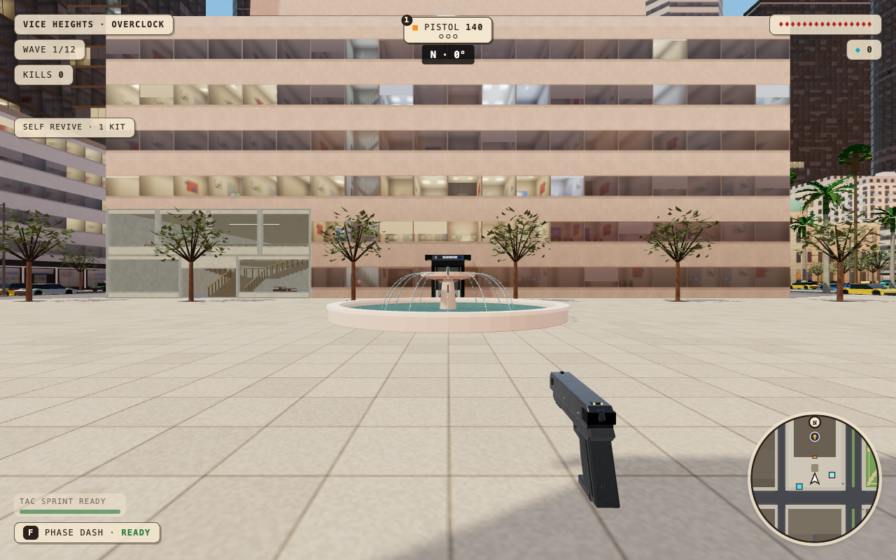
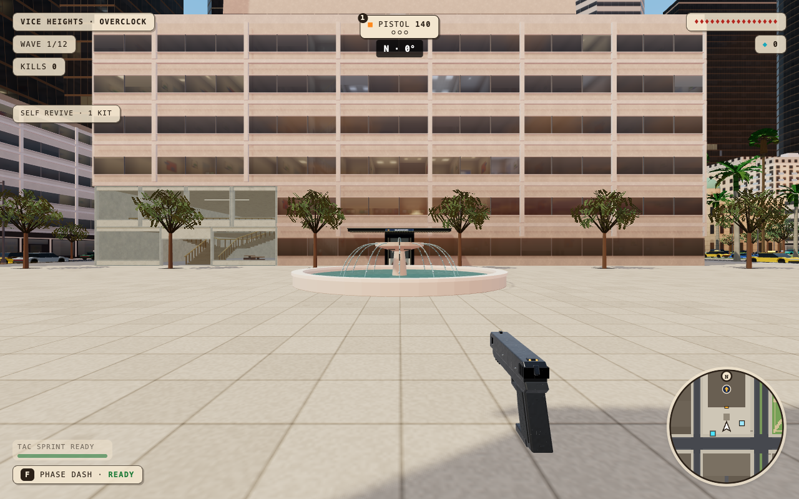
BEFOREAFTERVice Heights · random street view
Leaf sprays replace oversized knife-like leaves. The unflattering view is retained: flat repeating walls and simple props remain visible.
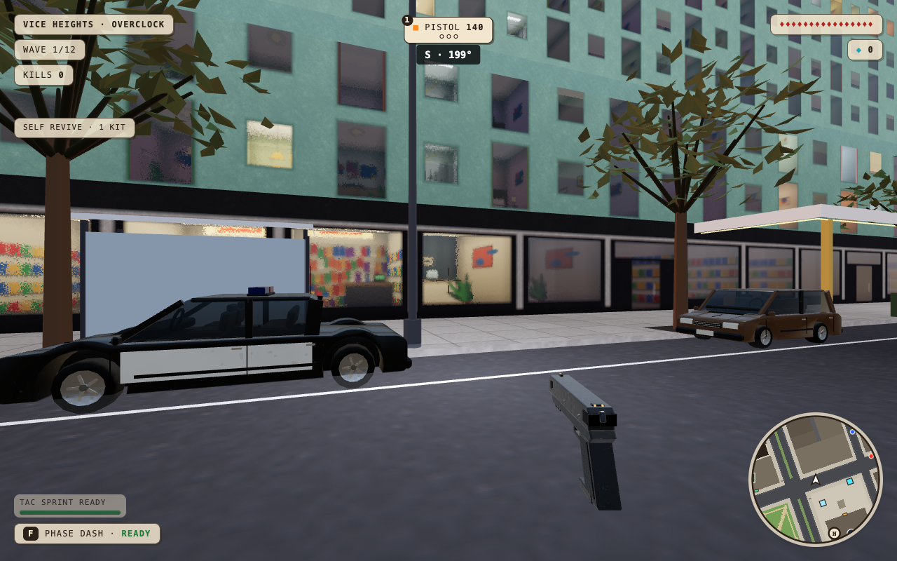
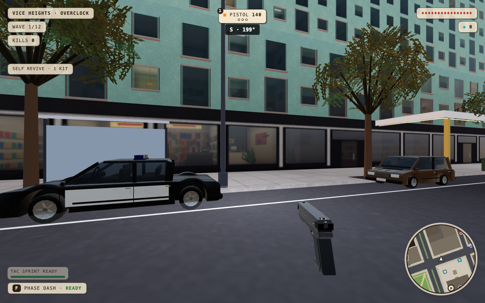
BEFOREAFTERVice Heights · matched close foliage
Small cutout leaves and attached twig sprays replace the oversized polygon leaves; exterior rooms no longer dominate the glass.
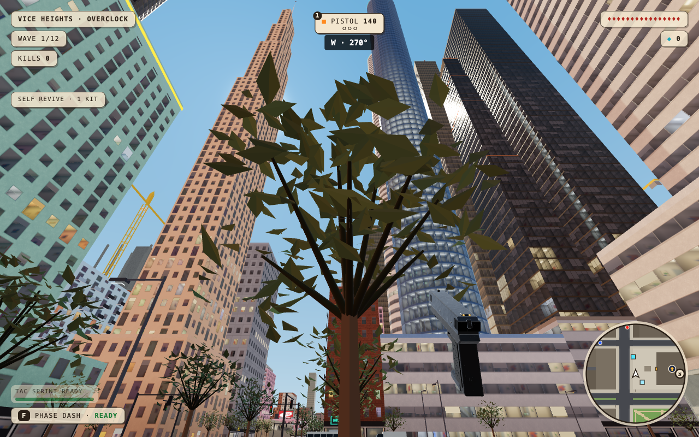
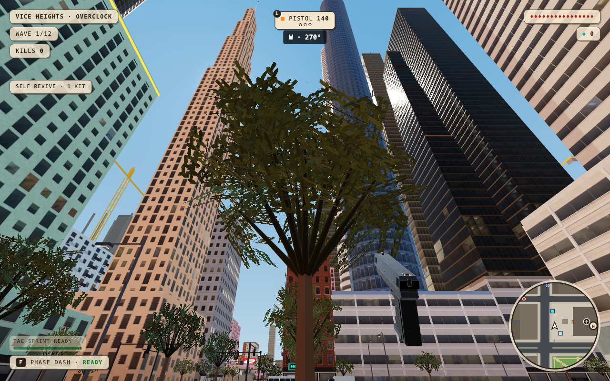
BEFOREAFTERVice Heights · stairwell
Round rails, subdued nosings, poured floor finish and masonry walls replace the single coarse surface treatment.
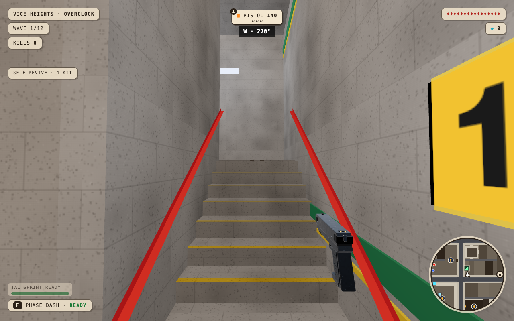
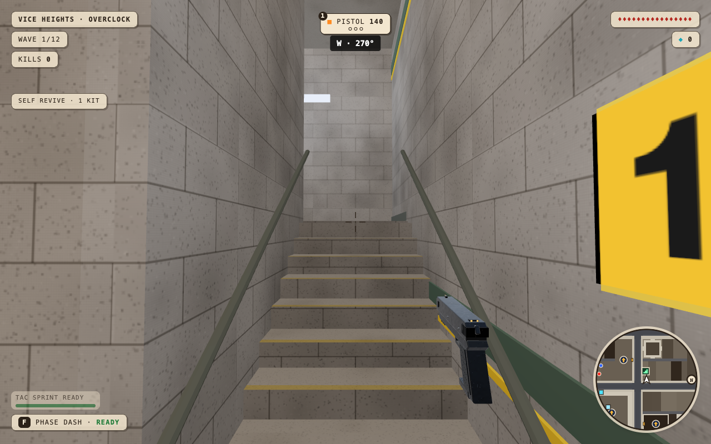
BEFOREAFTERPacific Pier · sunset random view
Reusable construction and entrance details; overall pier silhouette and composition remain familiar.
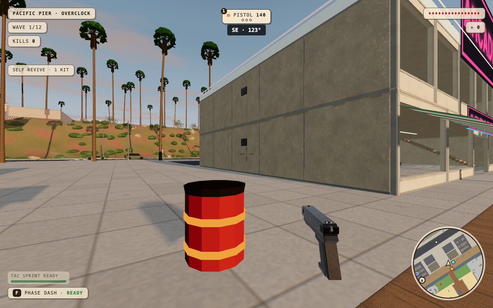
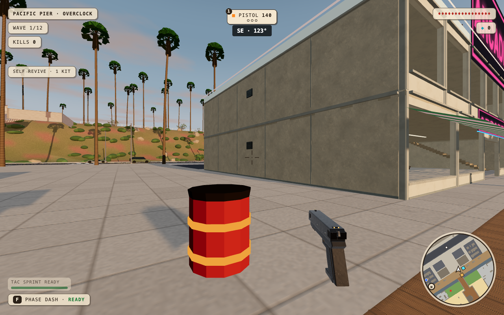
BEFOREAFTERDry Gulch · night random view
Smaller timber paint wear and construction detail; no claim of a major composition change in this map.
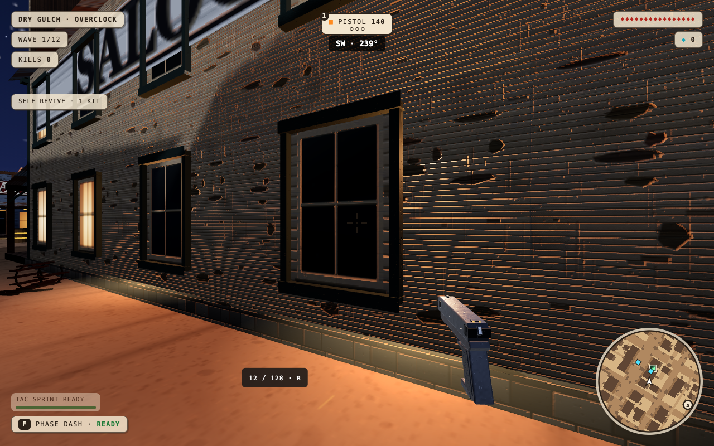
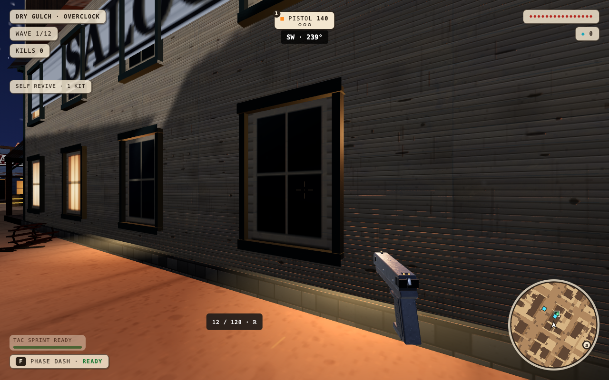
BEFOREAFTERAll four production maps remain. DraftPR42 is held from merge and deployment.